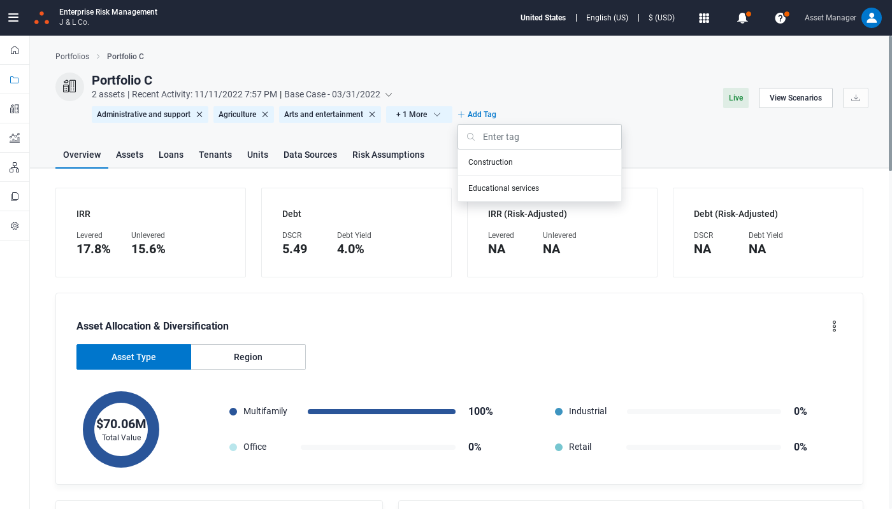
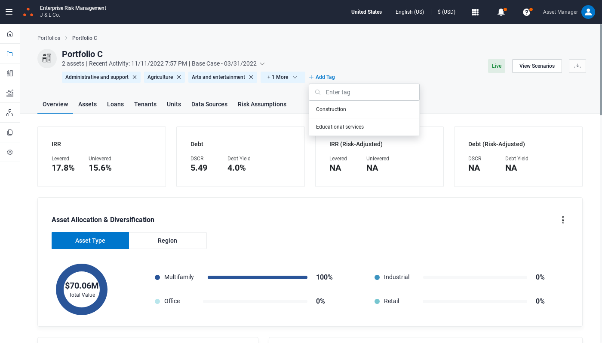

Started
Nov 12, 2022 11:13:46 AM
Ended
Nov 12, 2022 11:14:36 AM
Features Passed
0
Features Failed
1
Features
Scenarios
Steps
Timeline
-
Add and Delete portfolio tag
11:13:48 AM / 00:00:47:919 Fail
Add and Delete portfolio tag
11.12.2022 11:13:48 11.12.2022 11:14:36 00:00:47:919 · #test-id=1FailAddition and Deletion of portfolio tagsFailAddition and Deletion of portfolio tagsGiven Go to portfolio and click any portfolio "Portfolio C"When Click on SearchDropdown "bas"And Click on Add Tag "Administrative and support,Educational services,Construction" "Tag added successfully"Then Delete the Addedtags "Administrative and support" "Tag deleted successfully"Step skippedapphooks.ApplicationHooks.tearDown(io.cucumber.java.Scenario)Addition_and_Deletion_of_portfolio_tags FailAddition and Deletion of portfolio tagsGiven Go to portfolio and click any portfolio "Portfolio C"When Click on SearchDropdown "bas"And Click on Add Tag "Administrative and support,Educational services,Construction" "Tag added successfully"Then Delete the Addedtags "Construction" "Tag deleted successfully"Step skippedapphooks.ApplicationHooks.tearDown(io.cucumber.java.Scenario)Addition_and_Deletion_of_portfolio_tags
FailAddition and Deletion of portfolio tagsGiven Go to portfolio and click any portfolio "Portfolio C"When Click on SearchDropdown "bas"And Click on Add Tag "Administrative and support,Educational services,Construction" "Tag added successfully"Then Delete the Addedtags "Construction" "Tag deleted successfully"Step skippedapphooks.ApplicationHooks.tearDown(io.cucumber.java.Scenario)Addition_and_Deletion_of_portfolio_tags FailAddition and Deletion of portfolio tagsGiven Go to portfolio and click any portfolio "Portfolio C"When Click on SearchDropdown "base"And Click on Add Tag "Administrative and support,Educational services,Construction" "Tag added successfully"Then Delete the Addedtags "Administrative and support,Construction" "Tag deleted successfully"Step skippedapphooks.ApplicationHooks.tearDown(io.cucumber.java.Scenario)Addition_and_Deletion_of_portfolio_tags
FailAddition and Deletion of portfolio tagsGiven Go to portfolio and click any portfolio "Portfolio C"When Click on SearchDropdown "base"And Click on Add Tag "Administrative and support,Educational services,Construction" "Tag added successfully"Then Delete the Addedtags "Administrative and support,Construction" "Tag deleted successfully"Step skippedapphooks.ApplicationHooks.tearDown(io.cucumber.java.Scenario)Addition_and_Deletion_of_portfolio_tags FailAddition and Deletion of portfolio tagsGiven Go to portfolio and click any portfolio "Portfolio C"When Click on SearchDropdown "base"And Click on Add Tag "Administrative and support,Educational services,Construction" "Tag added successfully"Then Delete the Addedtags "Administrative and support,Educational services,Construction" "Tag deleted successfully"Step skippedapphooks.ApplicationHooks.tearDown(io.cucumber.java.Scenario)Addition_and_Deletion_of_portfolio_tags
FailAddition and Deletion of portfolio tagsGiven Go to portfolio and click any portfolio "Portfolio C"When Click on SearchDropdown "base"And Click on Add Tag "Administrative and support,Educational services,Construction" "Tag added successfully"Then Delete the Addedtags "Administrative and support,Educational services,Construction" "Tag deleted successfully"Step skippedapphooks.ApplicationHooks.tearDown(io.cucumber.java.Scenario)Addition_and_Deletion_of_portfolio_tags FailAddition and Deletion of portfolio tagsGiven Go to portfolio and click any portfolio "Portfolio C"When Click on SearchDropdown "bas"And Click on Add Tag "Administrative and support,Educational services,Construction" "Tag added successfully"Then Delete the Addedtags "Administrative and support,Construction" "Tag deleted successfully"Step skippedapphooks.ApplicationHooks.tearDown(io.cucumber.java.Scenario)Addition_and_Deletion_of_portfolio_tags
FailAddition and Deletion of portfolio tagsGiven Go to portfolio and click any portfolio "Portfolio C"When Click on SearchDropdown "bas"And Click on Add Tag "Administrative and support,Educational services,Construction" "Tag added successfully"Then Delete the Addedtags "Administrative and support,Construction" "Tag deleted successfully"Step skippedapphooks.ApplicationHooks.tearDown(io.cucumber.java.Scenario)Addition_and_Deletion_of_portfolio_tags FailAddition and Deletion of portfolio tagsGiven Go to portfolio and click any portfolio "Portfolio C"When Click on SearchDropdown "bas"And Click on Add Tag "Administrative and support,Educational services" "Tag added successfully"Then Delete the Addedtags "Administrative and support,Educational services" "Tag deleted successfully"Step skippedapphooks.ApplicationHooks.tearDown(io.cucumber.java.Scenario)Addition_and_Deletion_of_portfolio_tagsFailAddition and Deletion of portfolio tagsGiven Go to portfolio and click any portfolio "Portfolio C"When Click on SearchDropdown "bas"And Click on Add Tag "Administrative and support,Educational services,Construction" "Tag added successfully"Then Delete the Addedtags "Administrative and support,Educational services" "Tag deleted successfully"Step skippedapphooks.ApplicationHooks.tearDown(io.cucumber.java.Scenario)Addition_and_Deletion_of_portfolio_tagsFailAddition and Deletion of portfolio tagsGiven Go to portfolio and click any portfolio "Portfolio C"When Click on SearchDropdown "bas"And Click on Add Tag "Administrative and support,Educational services,Construction" "Tag added successfully"Then Delete the Addedtags "Administrative and support,Educational services,Construction" "Tag deleted successfully"Step skippedapphooks.ApplicationHooks.tearDown(io.cucumber.java.Scenario)Addition_and_Deletion_of_portfolio_tags
FailAddition and Deletion of portfolio tagsGiven Go to portfolio and click any portfolio "Portfolio C"When Click on SearchDropdown "bas"And Click on Add Tag "Administrative and support,Educational services" "Tag added successfully"Then Delete the Addedtags "Administrative and support,Educational services" "Tag deleted successfully"Step skippedapphooks.ApplicationHooks.tearDown(io.cucumber.java.Scenario)Addition_and_Deletion_of_portfolio_tagsFailAddition and Deletion of portfolio tagsGiven Go to portfolio and click any portfolio "Portfolio C"When Click on SearchDropdown "bas"And Click on Add Tag "Administrative and support,Educational services,Construction" "Tag added successfully"Then Delete the Addedtags "Administrative and support,Educational services" "Tag deleted successfully"Step skippedapphooks.ApplicationHooks.tearDown(io.cucumber.java.Scenario)Addition_and_Deletion_of_portfolio_tagsFailAddition and Deletion of portfolio tagsGiven Go to portfolio and click any portfolio "Portfolio C"When Click on SearchDropdown "bas"And Click on Add Tag "Administrative and support,Educational services,Construction" "Tag added successfully"Then Delete the Addedtags "Administrative and support,Educational services,Construction" "Tag deleted successfully"Step skippedapphooks.ApplicationHooks.tearDown(io.cucumber.java.Scenario)Addition_and_Deletion_of_portfolio_tags FailAddition and Deletion of portfolio tagsGiven Go to portfolio and click any portfolio "Portfolio C"When Click on SearchDropdown "base"And Click on Add Tag "Administrative and support" "Tag added successfully"Then Delete the Addedtags "Administrative and support" "Tag deleted successfully"Step skippedapphooks.ApplicationHooks.tearDown(io.cucumber.java.Scenario)Addition_and_Deletion_of_portfolio_tags
FailAddition and Deletion of portfolio tagsGiven Go to portfolio and click any portfolio "Portfolio C"When Click on SearchDropdown "base"And Click on Add Tag "Administrative and support" "Tag added successfully"Then Delete the Addedtags "Administrative and support" "Tag deleted successfully"Step skippedapphooks.ApplicationHooks.tearDown(io.cucumber.java.Scenario)Addition_and_Deletion_of_portfolio_tags
-
org.openqa.selenium.NoSuchElementException
1 tests
org.openqa.selenium.NoSuchElementException
1 failedStatus Timestamp TestName Fail 11:14:01 AM And Click on Add Tag "Administrative and support,Educational services,Construction" "Tag added successfully" Add and Delete portfolio tag.Addition and Deletion of portfolio tags.And Click on Add Tag "Administrative and support,Educational services,Construction" "Tag added successfully"Fail 11:14:03 AM And Click on Add Tag "Administrative and support,Educational services,Construction" "Tag added successfully" Add and Delete portfolio tag.Addition and Deletion of portfolio tags.And Click on Add Tag "Administrative and support,Educational services,Construction" "Tag added successfully"Fail 11:14:03 AM And Click on Add Tag "Administrative and support" "Tag added successfully" Add and Delete portfolio tag.Addition and Deletion of portfolio tags.And Click on Add Tag "Administrative and support" "Tag added successfully"Fail 11:14:03 AM And Click on Add Tag "Administrative and support,Educational services,Construction" "Tag added successfully" Add and Delete portfolio tag.Addition and Deletion of portfolio tags.And Click on Add Tag "Administrative and support,Educational services,Construction" "Tag added successfully"Fail 11:14:03 AM And Click on Add Tag "Administrative and support,Educational services,Construction" "Tag added successfully" Add and Delete portfolio tag.Addition and Deletion of portfolio tags.And Click on Add Tag "Administrative and support,Educational services,Construction" "Tag added successfully"Fail 11:14:03 AM And Click on Add Tag "Administrative and support,Educational services,Construction" "Tag added successfully" Add and Delete portfolio tag.Addition and Deletion of portfolio tags.And Click on Add Tag "Administrative and support,Educational services,Construction" "Tag added successfully"Fail 11:14:03 AM And Click on Add Tag "Administrative and support,Educational services" "Tag added successfully" Add and Delete portfolio tag.Addition and Deletion of portfolio tags.And Click on Add Tag "Administrative and support,Educational services" "Tag added successfully"Fail 11:14:03 AM And Click on Add Tag "Administrative and support,Educational services,Construction" "Tag added successfully" Add and Delete portfolio tag.Addition and Deletion of portfolio tags.And Click on Add Tag "Administrative and support,Educational services,Construction" "Tag added successfully"Fail 11:14:03 AM And Click on Add Tag "Administrative and support,Educational services,Construction" "Tag added successfully" Add and Delete portfolio tag.Addition and Deletion of portfolio tags.And Click on Add Tag "Administrative and support,Educational services,Construction" "Tag added successfully"